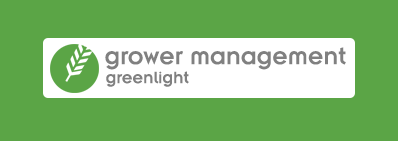

The overall Greenlight Logo is now updated and should look like part of the suite of products. However use of this logo is questionable as customers should refer to the individual product name for support.
The logos of the products in the Greenlight Suite should always be displayed in their entirety:

Please do not deface any of the Greenlight product logos:
Don’t recreate or change the elements of a logo or remove the product name
Don’t stretch , skew or rotate a logo

Don’t change the colour of a logo

The Greenlight product logos should always appear on a white background. If for any reason this is not possible please add a 10 pixel white guttering around the logo.

Logo Usage:
The logo appears in the top left of every page in the web application.
The logo appears in the about us page of the ipad app.
The logo appears in the top right corner of PDF reports. (Supplier Approval and Quality Control)
These icons are used for the ipad versions of the applications. These are in various sizes required by Apple. 1024x1024 for the App Store and can be seen on the server.
Each of the applications have a relevant favicon.